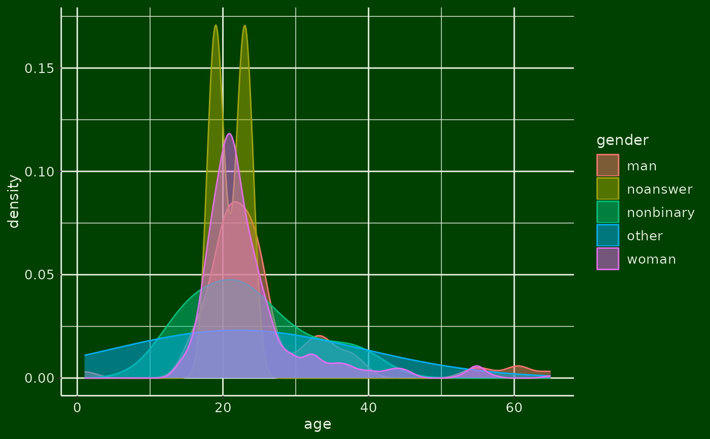

Theme White on Black
theme_wob.RdThis theme option is built to be used with a ggplot2 plot.
It offers several options for a dark theme, i.e. dark background with light writing.
Examples
# Load the data
data <- read_WEXTOR("https://github.com/iscience-kn/BiFiX/raw/main/data/BiFiX_data.csv")
# Create any plot
library(ggplot2)
ggplot(data, aes(age, color = gender, fill = gender)) +
geom_density(alpha = .5) +
theme_wob(contrast = "rex")
#> Warning: Removed 272 rows containing non-finite outside the scale range
#> (`stat_density()`).
